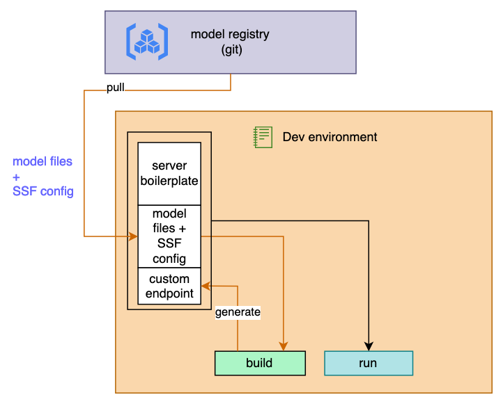

Features
Running an application from a remote repository
The config can specify a remote application with the syntax:
<REPO>{@BRANCH|@SHA}|<config yaml file>
Where <REPO> can be specified in standard Git protocol form such as:
git@<remote>- use theGitprotocol where the repository is being served.https://<remote>- use theHTTPprotocol where the repository is being served and is public.ssh://<user>@<host>- use theSSHprotocol where the repository is on a remote server.file:///<local path>- use theFileprotocol where the repository is on the local file system.
If a config yaml file is not specified then the default ssf_config.yaml file (from the repo root) is used.
The repo code is freshly cloned when init is issued.
Code is pulled to CWD .repo/<repo name>/...
 For example:
gc-ssf --config 'https://github.com/graphcore/simple-server-framework|examples/simple/ssf_config.yaml' init build run
simple-server-framework to .repo/simple-server-framework/... and then build and run the simple example.
Pinning a specific branch or version
You can also specify a branch or a commit hash.
For instance:
gc-ssf --config 'git@github.com:username/my-repo.git@my-branch|path/to/ssf_config.yaml' init build run
This also works when using deploy. Check out this example for more details.
Specifying a local application git repository
You can specify a local repository during development or for testing (if running SSF locally).
For instance:
Register SSH keys
You can use SSH keys to deploy to a VM.
SSH keys can be registered locally without specifying other commands; the key string needs to be stored in an enviroment variable, for example ENV_KEY:
Optional security layers
We advise you not to open the generated endpoints publicly, use dedicated services to secure them. SSF provides some minimal security layers 'API key' and 'Session Authentication'.
API key
This may be used to set a single (global) API key.
Use the --key <KEY> option to set an API key.
When an API key is specified, the following additional FastAPI endpoints are created:
/login: Login the API with the API key./logout: Logout the API.
See --key in options for more details.
Session Authentication (FastAPI only)
This may be used instead of, or in addition to, the API key to provide user level authentication via HTTP Basic authentication.
Use the --enable-session-authentication option to enable session authentication.
Use the --session-authentication-module-file to specify a python module that will be used to authorise a specific user.
When session authentication is enabled, the following additional endpoints are created:
/session_login: Login with HTTP Basic authentication./session_logout: Logout current session./session_status: Returns current session user id (if logged in).
See --enable-session-authentication in options for more details.
The module file must implement a function authenticate_user(username: str, password: str).
This should return None to refuse access, or a unique 'user id' as a string to permit access.
The returned user id string will be logged for information by SSF.
SSF will concatentate the returned user id string with a generated token to form a session key
that is returned as a cookie and will permit subsequent endpoint access.
The same user id is passed through to the application request() function in the meta dictionary with key user_id.
An implementation might look something like this:
def authenticate_user(username: str, password: str):
user_account = db_lookup_user(username)
if (
user_account and
compare_digest(password, user_account['password'])
):
return str(user_account['uid'])
return None
Optional SSL (FastAPI only)
Use the --enable-ssl option to enable Uvicorn SSL.
Use the --ssl-certificate-file to specify the SSL certificate file.
Use the --ssl-key-file to specify the SSL key file.
See --enable-ssl in options for more details.
Replication
Replication provides a mechanism for scaling the whole application. Replication levels can be used individually or stacked together depending on the required use case.
Application replication
Use the --replicate-application <N> option to create multiple application instances within one server instance. There will be <N> concurrent instances of the SSFApplicationInterface. Incoming requests will be put in an internal FIFO queue and therefore will be handled in the order they were received.
Choose this mechanism for applications where the average time spent on request handling (on IPUs) is significantly higher than the time spent on receiving the request and preparing the data.
See --replicate-application in options for more details.
Server replication (FastAPI only)
Use the --fastapi-replicate-server <K> option to create multiple server instances.
See --fastapi-replicate-server in options for more details.
NOTE: The value of <K> should not be higher than the number of processor cores on the machine that is used to run the server. Setting this value higher will cause performance degradation.
There will be <K> server instances working in <K> separate processes. Incoming requests will be assigned a process by the OS scheduler mechanism. This mechanism will generally choose a process that is waiting on I/O or not consuming CPU resources.
Choose server replication if the processor cores are likely to spend more time receiving the request and preparing the data than the amount of time the IPUs spend processing the input.
Stacking replication mechanism (FastAPI only)
In some cases it may useful to use both these replication mechanisms (dispatcher and server) together. It should be noted that the number of occupied IPUs in a ready state can be calculated using this formula:
IPUs = I * K * N
where:
- I is the number of IPUs used by one application instance
- K is
<K>used as value for--fastapi-replicate-server <K> - N is
<N>used as value for--replicate-application <N>
If the required number of IPUs are not available then the server will fail to boot.
Batching
Applications may benefit from being able to process multiple inputs at once. For this purpose max_batch_size may be set in your SSF config and this will instruct the server to accumulate user requests into batches of the defined maximal batch size. When set, applications will receive (through a request api) a list of size J containing <1,max_batch_size> dictionaries structured as defined in the SSF config. In this case the SSF server expects this function to return J dictionaries structured as defined in the SSF config.
NOTE: The order of the output results should match the order of the input samples in the batch.
A server batching timeout can be set using the --batching-timeout <T> run option. The server will wait a maximum of <T> seconds to accumulate up to max_batch_size samples. After <T> seconds have elapsed after receiving the first sample of the batch, the server will send as many samples as it has accumulated.
When max_batch_size is not set a batch size of 1 is assumed.
See --batching-timeout in options for more details.
Health probes
The SSF server implements health/ probes that can be used for higher level monitoring. The three probes available that can be pinged by the GET method are:
health/startup:(200:success, other:failure) Succeed as soon as the server has started.health/live: (200:success, other:failure) Liveness probe. Succeed as long as your server is alive. Failing liveness means that an irrecoverable error happened and the container should be restarted. Example one: Your application crashed during startup, liveness should then be down. Example 2: Your application has been running for some time and you have set the option--max-allowed-restartsto 5. If your application crashes and keeps crashing on restart, after 5 attempts by the watchdog mechanism you will have exceeded themax-allowed-restartsand liveness will be down.health/ready: (200:success, other:failure). Readiness probe. Returns 200 as soon as your application is ready to receive requests. Typically returns 200 when at least one replica is ready.
See --max-allowed-restarts in options for more details.
Interaction with --replicate-application
health/live: This returns Success until at least one replica is permanently stopped (max allowed restarts is reached).health/ready: This returns Success while there is at least one live and ready replica.
It is possible for liveness to be down while readiness is still up in the situation where one replica has failed but another is still running.
Metrics
By default SSF starts a Prometheus client, allowing the collection of runtime metrics. There is a fixed set of metric basenames, including the following:
ssf_dispatch_latency- duration of request limited to time spent in application.[http/grpc]_request_duration_seconds- duration of HTTP/gRPC requests in seconds (seen by ASGI channel).[http/grpc]_request_size_bytes- size of requests in bytes.[http/grpc]_response_size_bytes- size of responses in bytes.
Scope
SSF metrics are exported in separate groups so you can distinguish events that differ by:
- SSF endpoint address (name and version)
- response status codes - 2xx, 3xx, 4xx and so on for FastAPI or error code / OK status for gRPC
The following endpoints are excluded from metrics:
- the Prometheus metrics endpoint itself (configurable with SSF
runargument--prometheus-endpoint) - health checks routes -
/startup/,/ready/,/live/
See --prometheus-endpoint in options for more details.
Command line configuration
The following SSF run arguments can be used for SSF Prometheus configuration:
--prometheus-disabled- (default: not present) by default metrics client is started, adding this argument will disable it.--prometheus-endpoint- (default: "/metrics") URL path on which server will expose the metrics.--prometheus-buckets- buckets to be used for all duration metrics (for details see Latencies and buckets).--prometheus-port- defines the port on which Prometheus metrics are exposed. When this argument is passed, SSF will start a separate HTTP server running Prometheus client and the metrics will be available on any given address on the chosen port. When this argument is not passed, metrics port depends on the chosen API:- for
fastapi: the Prometheus client will be served on the same port using the same FastAPI server as the the service. In this case metrics will be accessible on endpoint/metrics. It is possible to change the metrics endpoint using the--prometheus-endpointargument - for
gRPC: the port will default to the server port incremented by one i.e. when SSF server runs on port 8200 then metrics will be served on port 8201
See --prometheus-*** in options for more details.
Latencies and buckets
Metrics that represent durations have been implemented as Prometheus histograms which means that the events are counted in configurable buckets. Each duration metric with a name containing <basename> exposes multiple time series:
- <basename>_bucket - cumulative counters for the observation buckets. Each bucket is defined by a number that is interpreted as the threshold value of duration in seconds and the bucket counts the requests which have a duration that is equal to, or smaller than, the defined threshold value. When not configured the following buckets are created by default: [ 0.01, 0.025, 0.05, 0.075, 0.1, 0.25, 0.5, 0.75, 1, 1.5, 2, 2.5, 3, 3.5, 4, 4.5, 5, 7.5, 10, 30, 60 ]. The last bucket is always
+Infand collects all events. - <basename>_sum - the total sum of all durations.
- <basename>_count - the count of events that have been observed (value-wise identical to bucket
+Inf)
As an example of how to use these metrics, to get a graph of average ssf_dispatch_latency you would draw ssf_dispatch_latency_sum / ssf_dispatch_latency_count. This definition is possible because of the Prometheus server support for expressions.
Watchdog
The SSF server provides watchdog capabilities to handle application runtime problems by detecting bad states and restarting the application under defined conditions.
Runtime generic watchdog
This is an internal server watchdog which detects if an application's process exists (regardless of the reason) and will restart the process if it has stopped.
Request duration watchdog
The server can monitor request duration and restart the application if the averaged request duration time exceeds requested threshold. This feature can be set using the following run options:
--watchdog-request-threshold <T>float value T sets a threshold in seconds. Default value is 0 which disables the request duration watchdog.--watchdog-request-average <A>integer A defines the number of last requests included in calculating the average watchdog request duration.
See --watchdog-request-threshold and --watchdog-request-average in options for more details.
Application watchdog
Applications can expose a custom watchdog which is being monitored by the SSF server. For details see watchdog in application's interface details. This will be called periodically by the server while no requests are being issued.
See option --watchdog-ready-period in options for more details.
APIs
SSF supports serving inference through HTTP/S endpoints (FastAPI) and gRPC endpoints (gRPC Python). The endpoint can be chosen using argument --api with value fastapi or grpc. By default SSF uses --api fastapi to start HTTP/S endpoint. If --api is used to override this, then you must set --api for all issued commands (build, run, package etc).
See --api in options for more details.